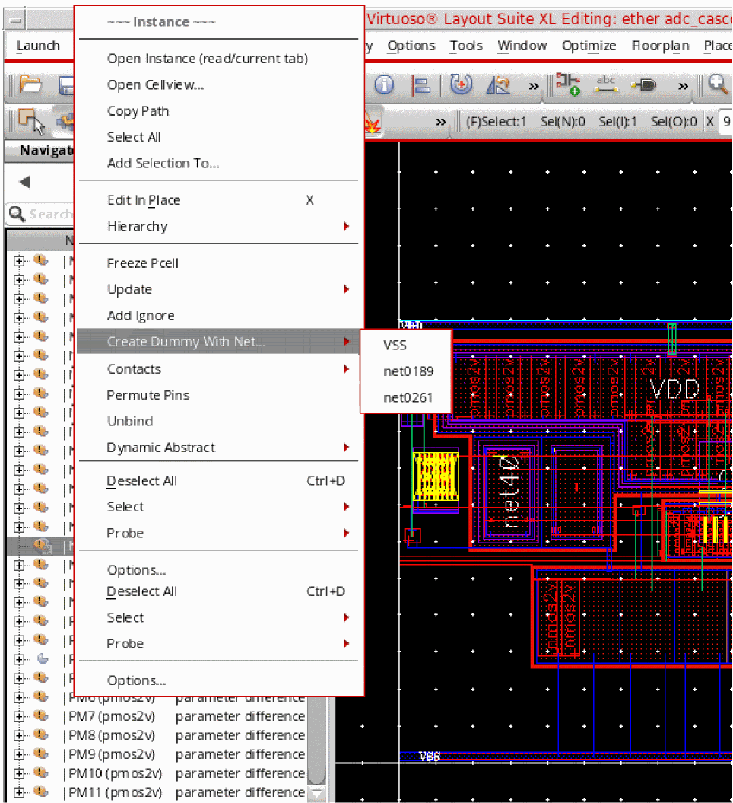
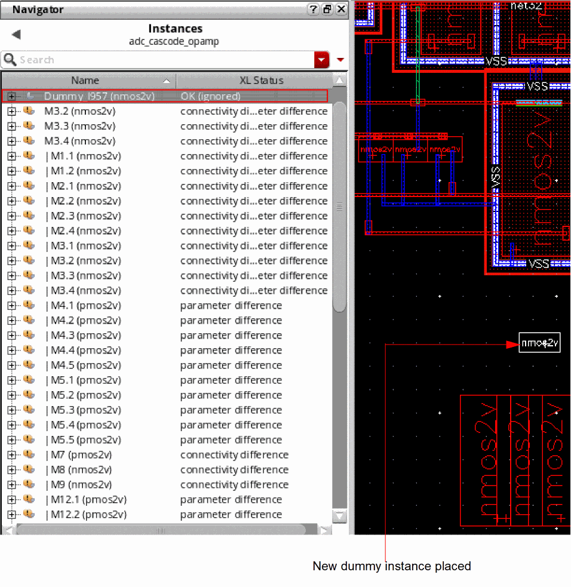

Creating Dummy Instances
Layout XL enables you to create dummies for layout instances of different types, such as MOS devices, FinFET devices, resistors, capacitors, and mosaics. You can create a dummy instance using the Create Dummy with Net shortcut command. You can then backannotate the dummies to the schematic, if required.
To create a dummy instance of a selected layout device:
-
In the Layout XL canvas, right-click the selected instance (or multiple instances) for which you want to create a dummy and choose the Create Dummy with Net command. Then, select the net with which you want to associate your dummy. The list of nets contains power and ground nets and nets connected to the selected instances.
 - Select the reference point on the selected instance that you want to use for creating the dummy instance on the layout canvas.
-
Select the area on the layout canvas where you want the dummy instance to be created. If you select the Infix mode, you need to specify only the final position for the dummy instance, not the reference point.
A dummy instance is created, as shown below, at the target location that you indicated.Alternatively you can use thelxMakeDummySKILL function to create a dummy with a net.
The new dummy that you created can be quickly identified in the Navigator by the prefix, Dummy, in its name.
Converting an Instance to Dummy
To convert a selected instance to a dummy instance, right-click the selected instance and choose Add Dummy Props.
Converting a Dummy to an Instance
To convert a selected dummy instance to a instance, right-click the selected instance and choose Remove Dummy Props.
Related Topics
Return to top